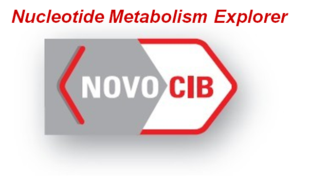
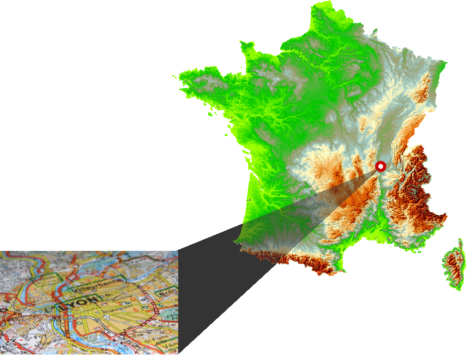
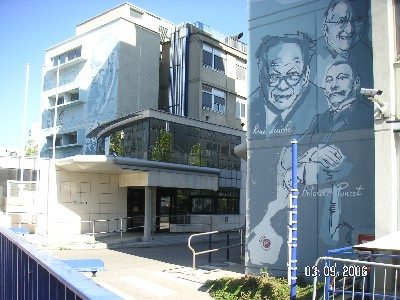

NOVOCIB is located in Lyon, the French historic capital of the diagnostic industry and research against infectious diseases.
|
 NovoCIB SAS115, avenue Lacassagne 69003 Lyon, France Tel / Fax (+33) 478536395 contact@novocib.com |
 | |
|  |